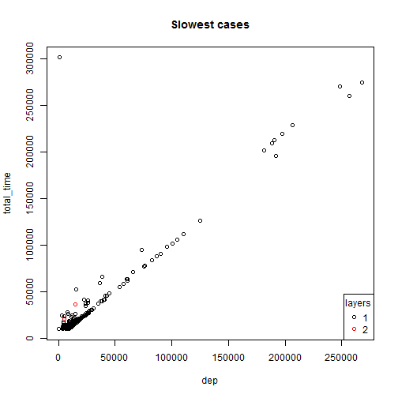
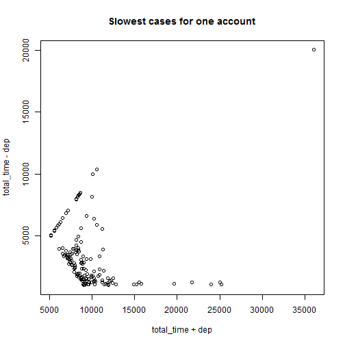
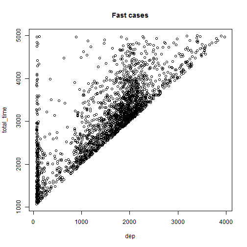

This is about an R app hosted on Shiny, which presents a few data points collected in calculating an account.
Blue Yijun Yuan
This is about an R app hosted on Shiny, which presents a few data points collected in calculating an account.
When people trade stocks, an account is used to bookkeeping. An account in code is also used to represent any mixture of securities, get included in another account. The result is a recursive structure.
## layer id total_time sub_sec_cnt sub_acc_cnt dep MERGE
## 1 1 633 3096 10 0 1852 12
The total_time is roughly equal to dep, as MERGE is usually fast. Another part of slowness comes from handling securities and accounts in sub layers, which cannot be measured effectively, but should have something to do with the number of holdings.
For slow ones (more than 10s), they are mostly caused by dep alone 
That is not true for an account that has been repeatedly tested 
That is not true when looking at fast cases either
